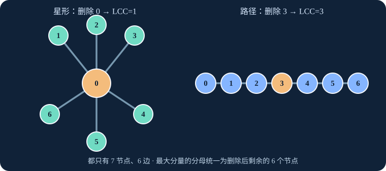

ROBUSTNESS / REMOVAL · PERCOLATION · CAPACITY
第15章 网络鲁棒性与脆弱性
删去相同数量的节点，为什么损失的系统功能相差巨大？
同样失去一个节点，网络可能从无恙变成碎片
网络由哪些节点组成固然重要，但它们怎么连接，决定故障能否被其他路径绕过。在一个七节点星形网络里，移除一片叶子不会切断剩下节点的相互可达性；移除中心枢纽却会留下六个彼此孤立的节点。若换成七节点路径，移除正中间节点会留下两个三节点连通块。这三种情况都只移除了一个节点，却有完全不同的结果。

先问“什么功能还存在”，再选择指标
常见的结构鲁棒性指标是最大连通分量（LCC）的大小。对删去节点集合 S 后的无向图，定义保留下来的节点中，仍然处在同一个最大连通分量的比例：
此处 n 是原始节点数，|S| 为被删节点数；归一化分母采用剩余节点数。另一些研究把分母固定为原始 n，比较时必须写明口径。小图中的 LCC 并不自动等于随机图理论中随 n 增大具有正比例规模的“巨连通分量”。
| 网络及删除对象 | 剩余节点 | LCC 大小 | R(S) |
|---|---|---|---|
| 星形：移除叶子 | 6 | 6 | 1.000 |
| 星形：移除枢纽 | 6 | 1 | 0.167 |
| 路径：移除正中间节点 | 6 | 3 | 0.500 |
最大连通分量只问是否可达，不能证明延迟、吞吐量、供电质量或经济产出仍然正常。这些必须另行指定功能指标。
随机失效与定向删除：为什么比较方法重要？
假设每个节点独立、等概率失效，则星形网络仅当中心被移除时才会在一次移除后碎裂得很严重；如果按照度数高低优先删除，则第一步就会失去中心。这里的“随机”必须来自实际抽样及多次试验，不能把选择一片叶子的示例称为随机攻击的均值。
只删除一个节点，比较星形网络的两种情形
移除叶子：剩余 6 个节点仍连成一块，连通比例 1。
若要比较 ER、WS 和 BA 网络的稳健性，必须至少固定节点数、尽量对齐边数或平均度、规定删除比例、定义是否每次删除后重算度排名，并对多组独立随机种子求不确定性区间。
渗流视角：阈值依赖网络与移除机制
在局部树状、度无相关的大规模配置模型里，独立保留节点概率 p 的随机点渗流常用下面的分枝判据讨论巨连通分量能否存在：
这里 p 是一个节点被保留的概率，不是删除概率。该条件不适用于任意有限图的一次指定枢纽移除，也不能从“度分布重尾”直接推出任意情形下的零临界值；度数截断、度相关、网络分层和删除策略均会影响实际结果。
拓扑还在，不代表系统负载能承受
除节点消失造成的断连外，还可能发生负载重分配引发的级联失效。例如，三台服务节点 A—B—C 初始都承载 4 单位工作量。若 B 失效后，其 4 单位工作均分给 A、C，那么两台剩余服务器负载各变为 6。只要容量低于 6，它们会同时超载，导致更大故障。
下面是特意简化的单轮平均分摊规则，不是 Motter–Lai 模型的实现：后者根据网络重新路由、流量/介数与节点容量建模，不能把本示例当成论文结果。
固定负载，仅调整两台剩余服务器的容量
容量 5，小于重新分配后的负载 6：A 与 C 均超载失效；包括原始 B 故障在内，共 3 台停止工作。
这清楚地区分了连通性损失与服务能力损失：无论 A、C 是否超载，它们在 B 删除后都不再相互连通；而容量不同决定的是它们能否继续独立承载工作。
代码：同样节点数和边数的精确移除实验
运行环境：Python 3.11+、NetworkX 3.3+。使用全枚举的小图，独立检查节点、边数和最大分量结果；不将单次演示误称为鲁棒性统计估计。
import networkx as nx
star = nx.star_graph(6)
path = nx.path_graph(7)
assert (star.number_of_nodes(), star.number_of_edges()) == (7, 6)
assert (path.number_of_nodes(), path.number_of_edges()) == (7, 6)
def largest_remaining_fraction(g, removed):
h = g.copy()
h.remove_nodes_from(removed)
if h.number_of_nodes() == 0:
return 0, 0.0
largest = max(len(part) for part in nx.connected_components(h))
return largest, largest / h.number_of_nodes()
assert largest_remaining_fraction(star, {6}) == (6, 1.0)
size, fraction = largest_remaining_fraction(star, {0})
assert size == 1 and abs(fraction - 1/6) < 1e-12
assert largest_remaining_fraction(path, {3}) == (3, 0.5)
print("hub failure:", (size, fraction))
def extra_overloads(capacity):
redistributed_load = 4 + 4/2
return sum(redistributed_load > capacity for _ in ("A","C"))
assert extra_overloads(5) == 2
assert extra_overloads(6) == 0真正的大规模对照研究需要覆盖移除比例曲线、不同网络与不同种子；故障级联还需要明确路由、负载、容量、恢复和时变过程。这些环节不可在只做连通性测试后宣称完成。
什么时候不能只看枢纽？
高连接度节点通常值得关注，但低度节点也可能恰好是割点或跨层依赖关键点。电力、通信、物流与金融网络存在方向、容量、空间成本及多层依赖；这些条件会让网络图上的“删除最高度节点”与真实运行风险排名不同。防护分析须用系统实际功能和节点失效机制进行二次验证。
原始研究与基线
- Albert, Jeong & Barabási (2000), Error and attack tolerance of complex networks, Nature 406:378–382；另有 后续勘误。
- Cohen, Erez, ben-Avraham & Havlin (2000), Resilience of the Internet to Random Breakdowns，Physical Review Letters。
- Cohen et al. (2001), Breakdown of the Internet under Intentional Attack。
- Motter & Lai (2002), Cascade-based attacks on complex networks，基于负载重分配的级联框架。
由此完成一个闭环：拓扑决定替代路径，移除机制决定损伤入口，动力学和容量决定故障是否放大。下一章可以在这样的结构约束下研究预测未来边的可能性。